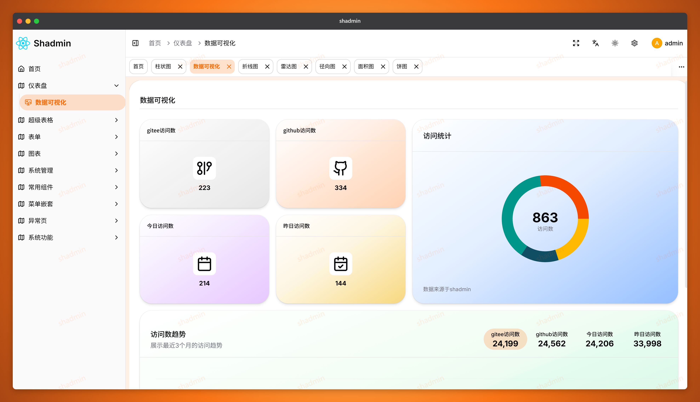
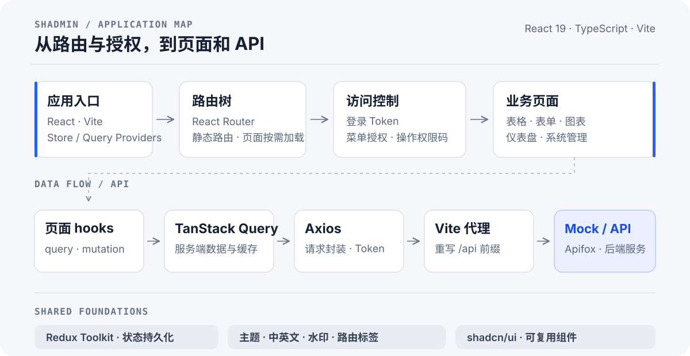

SHAdmin
一个面向前端开发者的 React 后台管理项目。 从可交互的表格、表单和图表，到动态路由、菜单授权与操作权限，提供可阅读、可运行、可按需改造的实现示例。
React 19 · TypeScript · Vite 7 · React Router 7 · TanStack Query · Redux Toolkit · Tailwind CSS 4 · shadcn/ui

仪表盘实机预览 · 图表与指标为演示数据
功能亮点
- 可定制主题：基于 Redux Toolkit、
redux-persist与 CSS 变量，实现亮色、暗色和跟随系统三种模式、8 种预设主题色，以及灰度和色弱滤镜；外观设置会在刷新后保留。色弱模式目前使用invert(80%)滤镜，不等同于经过验证的色觉模拟。 - 四种后台布局：基于可组合的 React 布局模块，实现垂直、经典、水平和分栏布局，并支持运行时切换。
- 全局水印：基于
WatermarkProvider和 Canvas 生成重复水印图层，支持全局开关，并可使用 CSS 主题变量跟随主题色。 - 表格、表单与树形选择器：基于 TanStack Table 和 TanStack Query，实现基础表格、复杂表格、树形筛选及数据分页；基于 React Hook Form 与 Zod 实现基础、复杂和动态表单；基于 React Context 实现支持搜索、展开、父子联动和半选状态的
TreeSelector。 - shadcn/ui 风格组件：基于 shadcn/ui 的组件组织方式、Radix UI 原语和 Tailwind CSS，提供保留在仓库中的本地组件源码，便于阅读、组合和按需定制；同时包含上传器、日期/时间选择器等业务组件。
- RBAC 访问控制：基于 React Router 守卫、服务端菜单数据和
menuIds控制页面路由与菜单；基于permissionCodes和<Can>组件控制页面内操作的显示，支持 all/any 权限组合。前端控制不替代后端 API 鉴权。 - 常见图表：基于 Recharts 实现仪表盘及柱状、折线、面积、饼图、雷达和径向图示例；图表指标为演示数据。
- 多级菜单嵌套：基于递归菜单树和嵌套路由实现目录、子目录与页面的多级导航，并按用户菜单授权筛选可见项。
- 可定制路由标签：基于 React Router、Redux Toolkit 与
redux-persist实现随路由联动的标签导航，支持关闭标签、设置或重置自定义标题，并在刷新后保留状态。 - 中英文界面：基于 i18next 与 react-i18next 实现中英文切换，并让界面文案随当前语言更新。
- 统一请求与数据管理：基于 Axios 与 TanStack Query 封装 API 请求和服务端状态管理，实现 Token 注入、查询缓存、重复请求取消，以及对网络和服务端错误的有限次重试；开发环境可通过 Vite
/api代理连接 Mock 或后端。 - 系统管理与权限演示：基于 API hooks 提供用户、角色和菜单管理页面；基于按用户名区分的权限缓存和开发环境账号切换，演示不同用户的菜单与操作权限差异。
- 认证与表单示例：基于 React Hook Form 与 Zod 实现登录和注册表单校验，并提供验证码登录页面；注册和验证码流程需接入相应后端 API。
- 后台导航与状态反馈：基于 React Router 导航状态实现路由加载进度提示，基于浏览器 Fullscreen API 实现全屏切换，并提供 403、404、500 状态页。
仪表盘和图表使用演示数据；Apifox Mock 用于接口联调，写操作不保证持久化；前端权限控制不替代后端 API 鉴权。文件下载组件目前是示例实现，并非实际的 Excel 二进制导出。
架构一览

页面通过 hooks 使用 TanStack Query 管理服务端数据；Axios 负责请求与 Token，开发时由 Vite 将 /api 转发到 Mock 或后端服务。Redux Toolkit 管理客户端状态，应用外层提供主题、多语言、水印等共享能力。
src/
├── pages/ 路由页面
├── components/ 可复用 UI 与业务组件
├── layout/ 后台框架与布局
├── features/ 路由、主题、多语言、水印、路由标签等能力
├── routers/ 静态路由与按需加载的业务路由
├── services/api/ Axios、API 模块、Query hooks 与类型
└── store/ Redux Toolkit 状态
本地运行
需要 Node.js（满足 Vite 7 的运行要求）和 pnpm。
pnpm install
pnpm dev
前端需要兼容的 API 服务才能登录并访问依赖接口的页面。.env 中的 VITE_BASE_URL 用于 API 路径前缀（本地代理通常为 /api）；在 .env.development 中设置 VITE_PROXY 指向本地后端或 Apifox Mock。Vite 默认代理目标为 http://localhost:3000，并会在转发时移除 /api 前缀。修改配置后重启开发服务器。
如需配置 Apifox 登录、菜单、权限及 Mock 响应，请看 docs/apifox/README.md。Mock 写操作不保证持久化；演示数据和账号不可用于生产环境。
开发命令
| 命令 | 用途 |
|---|---|
pnpm dev |
启动开发服务器 |
pnpm typecheck |
TypeScript 类型检查 |
pnpm lint |
ESLint 检查 |
pnpm build |
类型检查并生成生产构建 |
pnpm preview |
本地预览生产构建 |
聚焦验证脚本：
pnpm test:role-i18n
pnpm test:request-auth
pnpm test:menu-cache
pnpm test:can-permissions
pnpm test:user-action-permissions
pnpm test:role-permissions
pnpm test:apifox-menu
pnpm test:apifox-permissions